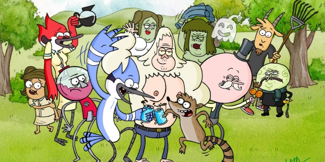
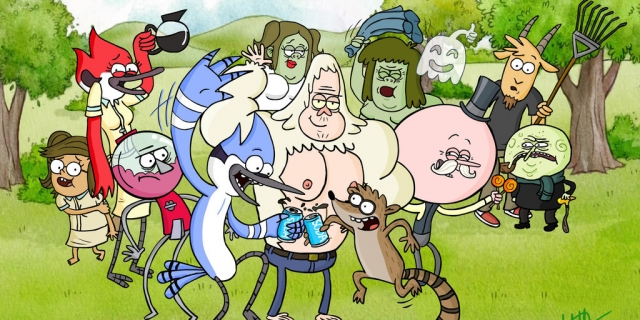

O INCRÍVEL MUNDO DE GUMBALL - A série gira em torno de Gumball Watterson, um gato azul de 12 anos de idade e, seu irmão Darwin Watterson, um peixe laranja que tem pernas,eles frequentam a escola secundária na cidade de Elmore e passam por diversas aventuras.
HORA DE AVENTURA - A série segue as aventuras de Finn, o Humano e o seu melhor amigo e irmão adotivo Jake, que se aventuram na Terra de Ooo, num futuro pós-apocalíptico por volta de mil anos após a "Grande Guerra dos Cogumelos", sendo Finn presumidamente o último humano existente.
APENAS UM SHOW - O gaio Mordecai e o guaxinim Rigby são melhores amigos e trabalham num parque, gerenciado por Benson, que não tem a mínima paciência com os funcionários. É lá que eles dão um jeito de escapar do trabalho e buscar várias formas de se divertir.
 
